2026.04
Our workshop "Event-Based Multimodal Vision (EBMV)" has been accepted by ECCV'26.
Postdoctoral Researcher
1037 Luoyu Road,Email: liuhy@hust.edu.cn
Biography and research interests.
I am currently a postdoctoral researcher at Huazhong University of Science and Technology (HUST). Previously, I received my Ph.D. degree in Artificial Intelligence from HUST in 2025, under the supervision of Prof. Luxin Yan and Prof. Yi Chang. I obtained my M.S. and B.E. degrees from China University of Mining and Technology (CUMT).
My current research interests include event-based vision, low-light and high-dynamic-range image imaging, and dynamic scene perception. My research aims to develop robust imaging and perception methods for challenging scenarios with extreme illumination, high-speed motion, and limited sensing resources.
Recent updates.
Our workshop "Event-Based Multimodal Vision (EBMV)" has been accepted by ECCV'26.
Three papers on event-based low-light imaging, turbulence mitigation, and object tracking have been accepted by CVPR'26, including one Highlight.
We won 1st place in the track 'Event-Based Pose Estimation' in the CVPR'26 SPARK AI4Space Challenge.
Our diffusion-based optical flow paper has been accepted by NeurIPS'25 (Spotlight).
I was invited to give an online talk titled “Event-based High-Speed and High Dynamic Range Imaging” at the 18th Member Sharing Forum of the China Society of Image and Graphics (CSIG).
Our event-based 4D Gaussian splatting paper has been accepted by ICCV'25.
Our event-based video frame interpolation paper has been accepted by CVPR'25.
Our event-based dense and continuous optical flow paper has been accepted by CVPR'25.
Our work for event-based low-light imaging has been accepted by TPAMI'25.
Our work for event-based nighttime HDR imaging has been accepted by CVPR'24.
Our work for event-based nighttime optical flow estimation has been accepted by ICLR'24 (Spotlight).
We won 1st place in the track 'Atmospheric Turbulence Mitigation' in the CVPR'23 UG2+ Challenge.
Published and unpublished works.
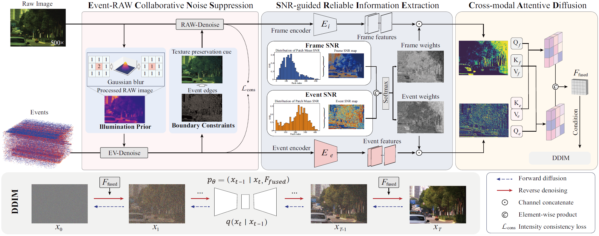
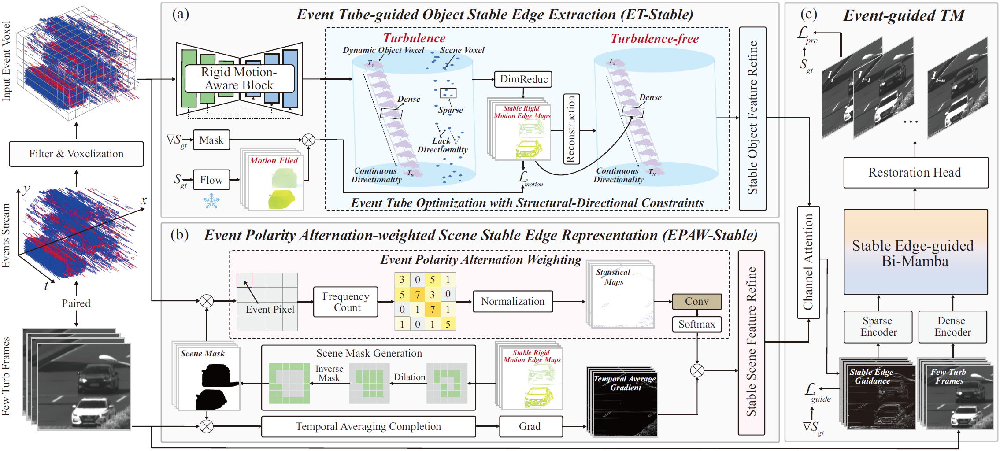
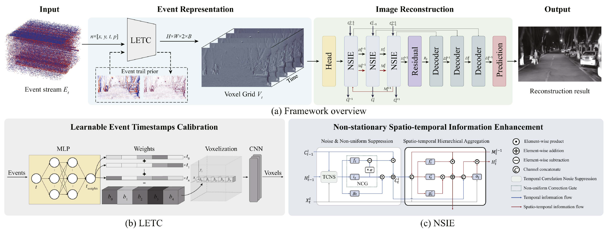
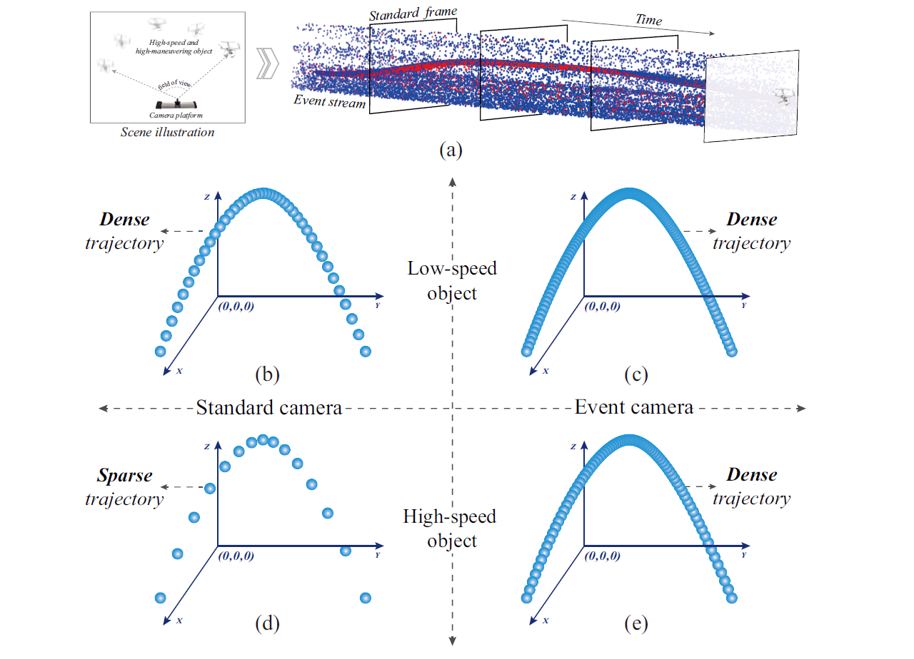

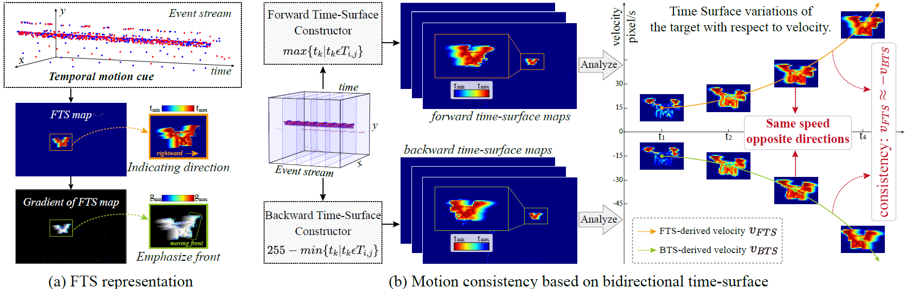
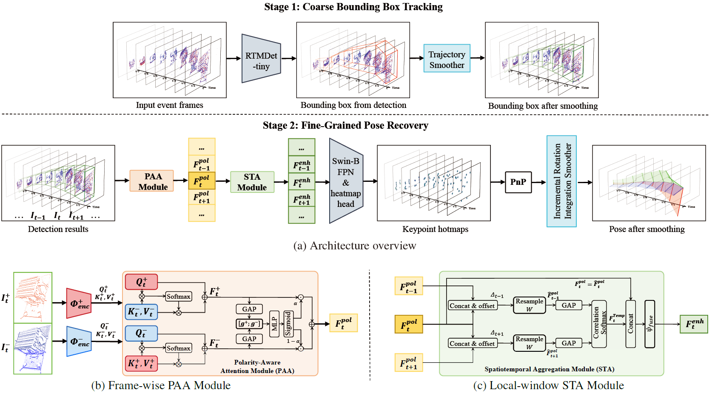
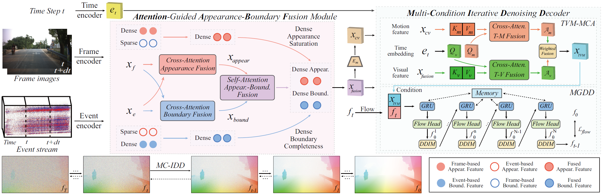
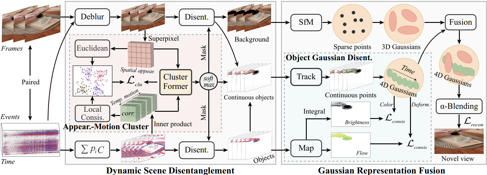
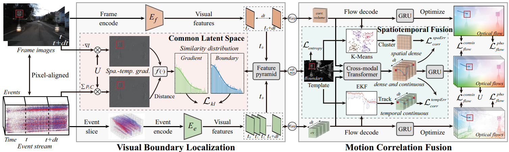
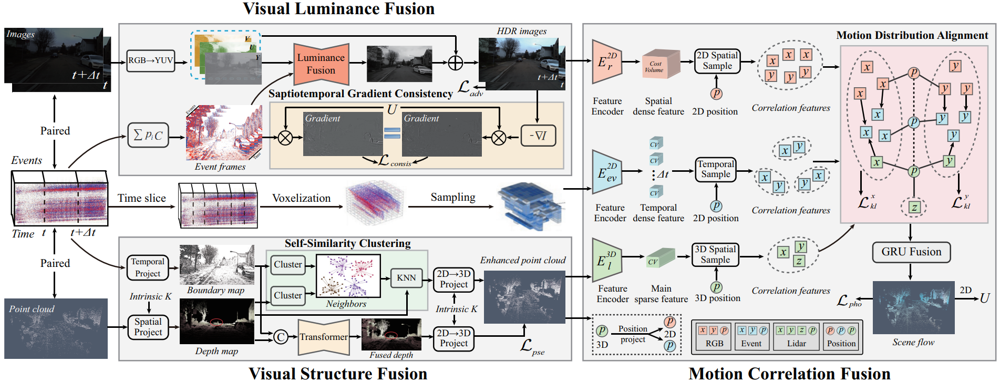
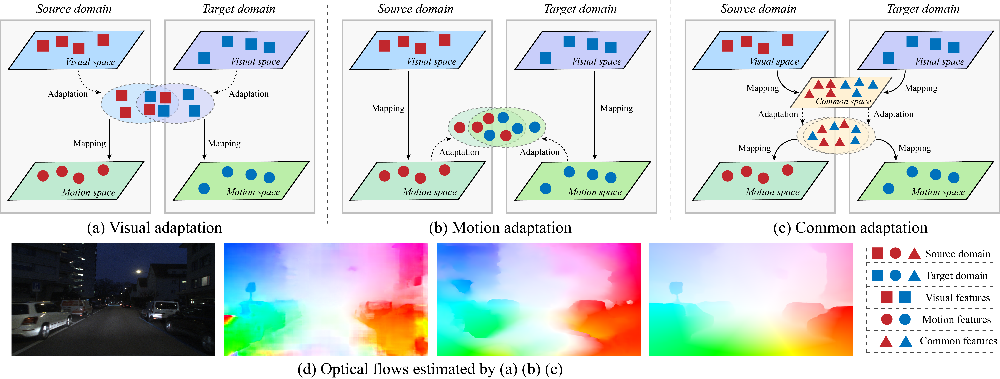
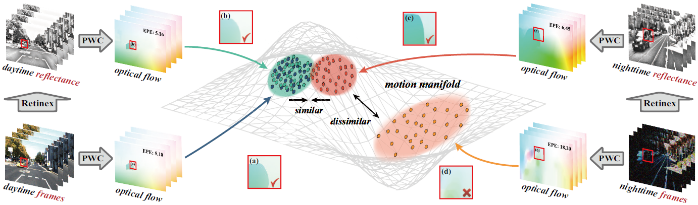
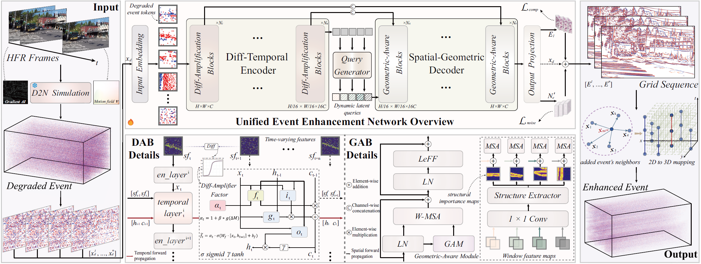
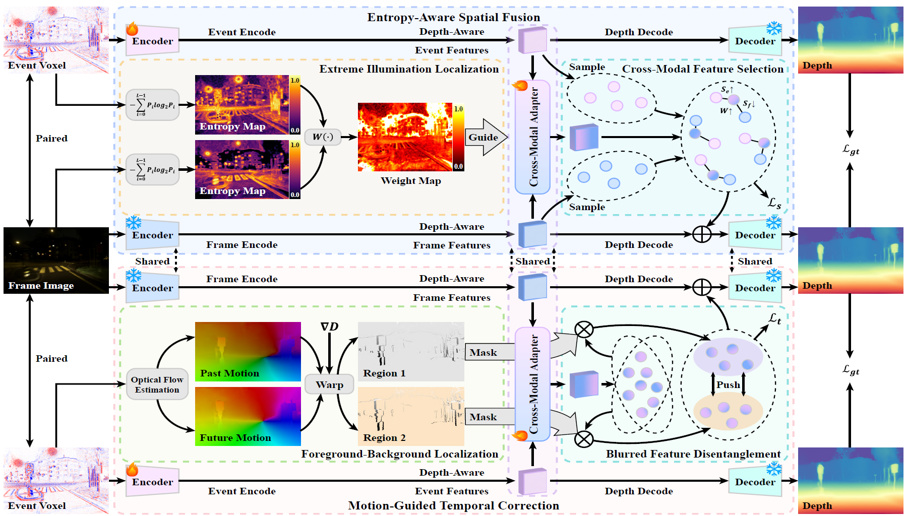
Academic reviewing services.
Academic reviewing services.
Journal Reviewers: IJCV, TIP, TCSVT, TMM, RAL.
Conference Reviewers: CVRR, ICCV, ECCV, NIPS, AAAI, ICRA.